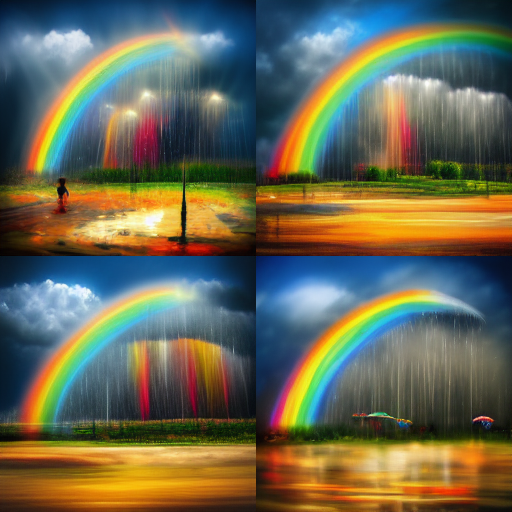

2022-06-02
Note: I am not the first person to talk about this. And I won't be the last. But I had such a profound moment, I had to share it.
AI is having a (creative) moment. In the past year there have been several text-to-image AI's released by various groups. There is the independent research lab called Midjourney. OpenAI opened access to DALL·E 2. And Google just previewed Imagen. They all take different technical approaches but the user interface is the same — you enter text and receive an image.
The first time you see a generated image, you don't know how to react [1]. At first I was awestruck. Then I was (briefly) terrified. Then I returned to some version of amazement.
When I received beta access to Midjourney, I felt like a kid in a candy store. I don't think that idiom has ever felt more true. I didn't know where to start, so I simply started trying everything I could think of.
Then my daughter saw me. She asked what I was doing. I replied "drawing". She asked if she could draw too. I said of course and asked what she wanted to draw. Without hesitation she asked for a unicorn. I asked for more details. She described the stance and scenery. We landed on a "jumping unicorn in a field".
A set of images appeared. Despite the images being somewhat frightening, she was amazed.
Did we make those? I like that one! That unicorn looks a little weird, right?. Why is there a stick? Can we get rid of the stick? Actually, it's okay. I love it anyway.
Then it struck me. She is going to grow up with this as a norm. Generating images from text will be as natural as coloring with a crayon. While I was able to draw stick figures using Microsoft Paint, my kids will be able to create surreal pieces of art at the same age.
Over time there will be techniques on how to create different styles, how to refine variations, and how to hack the edges of what it's meant to do [2]. Similar to how a charcoal artist knows how to manipulate their tool in ways amateurs could never imagine, so will be the case for AI artists.
But wait. Isn't this scary?
I have seen people react with fear and joy, terror and exhilaration. I understand both sides. I am focused on the latter [3]. I am imagining how this can accelerate new discoveries. I am wondering how this can be used to make human creativity stronger, not replace it. Call me an idealist, but seeing the reaction of a 5-year-old gives me hope on the utility and potential of AI as a creative interface.
Image of "sunny rainbow rainstorm dream" generated by Midjourney
[1] Most people will see one of the "winners" first, something that took a few tries to get.
[2] While watching others in the Midjourney Discord, it was fascinating to watch the parameters they used to create specific types of images. Some fun ones: cinematic lighting, isometric view, shot with a Sony A1 in 4k, rendered in Unreal Engine.
[3] I don't want to discount the reality of the downside. The ability to create hyperrealistic images so easily can be abused. In fact, I guarantee it will be. But that is the case with any technological advancement. And similar to others, there will be enormous investment in fraud detection and deterrence. It won't be perfect (just look at spam), but it will get better.